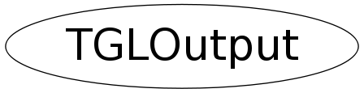

class TGLOutput
TGLOutput Wrapper class for GL capture & output routines
Function Members (Methods)
public:
| TGLOutput() | |
| TGLOutput(const TGLOutput&) | |
| virtual | ~TGLOutput() |
| static void | Capture(TGLViewer& viewer) |
| static Bool_t | Capture(TGLViewer& viewer, TGLOutput::EFormat format, const char* filePath = 0) |
| static TClass* | Class() |
| static void | CloseEmbeddedPS() |
| virtual TClass* | IsA() const |
| TGLOutput& | operator=(const TGLOutput&) |
| virtual void | ShowMembers(TMemberInspector& insp) |
| static void | StartEmbeddedPS() |
| virtual void | Streamer(TBuffer& b) |
| void | StreamerNVirtual(TBuffer& b) |
private:
| static Bool_t | CapturePostscript(TGLViewer& viewer, TGLOutput::EFormat format, const char* filePath) |
Class Charts
{kind=link}
{kind=link}
{kind=link}
{kind=link}

Function documentation
Bool_t Capture(TGLViewer& viewer, TGLOutput::EFormat format, const char* filePath = 0)
Capture viewer to file. Arguments are: 'viewer' - viewer object to capture from 'format' - output format - only postscript types presently. One of kEPS_SIMPLE, kEPS_BSP, kPDF_SIMPLE or kPDF_BSP See TGLOutput::CapturePostscript() for meanings 'filePath' - file output name. If null defaults to './viewer.eps' or './viewer.pdf' depending on format requested Note : Output files can be large and take considerable time (up to mins) to generate
Bool_t CapturePostscript(TGLViewer& viewer, TGLOutput::EFormat format, const char* filePath)
Capture viewer to postscript file. Arguments are: 'viewer' - viewer object to capture from 'format' - output format kEPS_SIMPLE - lower quality EPS kEPS_BSP - higher quality EPS kPDF_SIMPLE - lower quality PDF kPDF_BSP - higher quality PDF 'filePath' - file output name. If null defaults to './viewer.eps' or './viewer.pdf' depending on format requested